Wahlen in Bremen mit 5 Stimmen
Wie werden sie vergeben und wer wird zusammen gewählt?
Jan Lorenz
Haus der Wissenschaft Bremen, Wissen um 11
6. Mai 2023
Wahl-“Bremensien”1
- Bremer können alle 4 Jahre ihr Parlament wählen
- Teilzeit-Parlament (auch in HH)
- Das Bürgerschaft hat die Richtlinienkompetenz und nicht der Regierungschef
- Kein “Kanzlerprinzip”, Bürgermeister \(\neq\) Ministerpräsident:
Senatsmitglieder brauchen Vertrauen der Bürgerschaft nicht ihres Präsidenten - Trennung Amt und Mandat: Regierungsmitglieder nicht im Parlament (auch in HH)
Die Bremische Bürgerschaft
- Zwei Wahlgebiete
- Bremen (Stadt) 72 Abgeordnete
- Bremerhaven 15 Abgeordnete
- Technisch zwei unabhängige Wahlen:
Eigene Listen, eigene 5% Sperrklausel
Fun-Fact Bremerhaven: 1 einzelner von 15 Abgeordneten entspricht 100/15 = 6.67% also bereits mehr 5%. Die natürliche Sperrklausel kann also sogar über 5% liegen.1
Das 5-Stimmen Wahlsystem
Wählen: 5 Stimmen irgendwie aufteilen
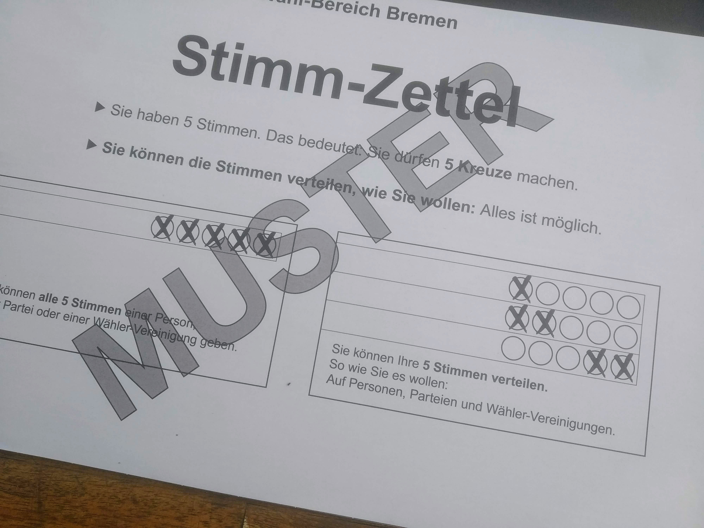
Wählen: Listenstimmen und Personenstimmen
Auszählen
- Auf dem Stimm-Zettel hat jede Partei und jede Person eine ID-Nummer
- Die erste(n) Stelle(n) bezeichnen die Liste
- Die letzten beiden Stellen bezeichnen den Listenplatz einer Person, Listenplatz 0 steht für eine Listenstimme
- Stimm-Zettel werden digital erfasst (je 5 ID-Nummern)
Beispiele:
200 \(\to\) 02 00 \(\to\) Liste 2, Listenstimme
417 \(\to\) 04 17 \(\to\) Liste 4, Person auf Listenplatz 17
Wahlergebnis: Tabelle mit Stimmen für alle IDs.
| 7 Beispiele für digitalisierte Stimm-Zettel | ||||
| Stimme 1 | Stimme 2 | Stimme 3 | Stimme 4 | Stimme 5 |
|---|---|---|---|---|
| 127 | 127 | 127 | 127 | 127 |
| 101 | 101 | 107 | 107 | 107 |
| 100 | 200 | 300 | 500 | 500 |
| 235 | 235 | 235 | 235 | 235 |
| 301 | 301 | 301 | 302 | 302 |
| 901 | 901 | 901 | 901 | 901 |
| 700 | 700 | 700 | 700 | 700 |
| Wahlergebnis Bremen 2019 | |||
| Beispiel für die ersten 5 IDs | |||
| ID | Partei | Name | Stimmen |
|---|---|---|---|
| 100 | SPD | Listenstimmen | 154532 |
| 101 | SPD | Sieling | 65550 |
| 102 | SPD | Bogedan | 7037 |
| 103 | SPD | Mäurer | 16913 |
| 104 | SPD | Quante-Brandt | 2620 |
Mandate zuteilen
- Die Mandate werden nach dem Prinzip der Verhältniswahl auf die Parteien verteilt.1
Parteien unter 5% Stimmenanteil fallen weg. - Die Mandate einer jeden Partei werden nach dem Prinzip der Verhältniswahl in zwei Kontingente unterteilt:
- ein Listen-Mandat-Kontingent
- ein Personen-Mandat-Kontingent
- Aus der Liste jeder Partei wird eine Personen-Stimmen-Rangliste gebildet. Die Personen mit den meisten Stimmen erhalten die Personen-Mandate vergeben
- Die Listen-Mandate erhalten die ersten Personen der unveränderten Liste sofern sie nicht schon ein Personen-Mandat haben.
Jede Stimme hat mehrere Funktionen!
Listen-Stimmen zählen für
- die Partei
- das Listen-Mandats-Kontingent der Partei
Personen-Stimmen zählen für
- die Partei
- für das Direkt-Mandat-Kontingent welches nach Personen-Stimmen-Rangliste vergeben wird
- für die Position der Person auf der Rangliste
Beispiel: Bremen (Stadt)
2019 - Verhältniswahl
- Stimmanteile der Parteien
| Partei | Stimmen | Prozent |
|---|---|---|
| SPD | 314.530 | 24.93% |
| CDU | 343.530 | 27.23% |
| GRÜNE | 221.509 | 17.56% |
| DIE LINKE | 148.544 | 11.77% |
| FDP | 75.420 | 5.98% |
| AfD | 71.278 | 5.65% |
| BIW | 20.691 | 1.64% |
| Die PARTEI | 24.324 | 1.93% |
| PIRATEN | 9.675 | 0.77% |
| BGE | 5.939 | 0.47% |
| FREIE WÄHLER | 12.714 | 1.01% |
| MENSCHLICHE WELT | 2.559 | 0.20% |
| Die Humanisten | 6.637 | 0.53% |
| V-Partei³ | 4.269 | 0.34% |
- 5%-Hürde, Sitzverteilung
| Partei | Stimmen | Prozent | Sitze |
|---|---|---|---|
| SPD | 314.530 | 24.93% | 19 |
| CDU | 343.530 | 27.23% | 20 |
| GRÜNE | 221.509 | 17.56% | 13 |
| DIE LINKE | 148.544 | 11.77% | 9 |
| FDP | 75.420 | 5.98% | 4 |
| AfD | 71.278 | 5.65% | 4 |
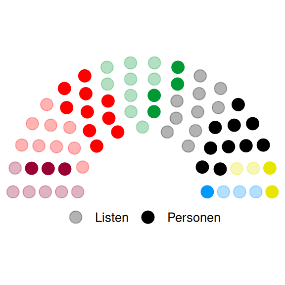
- Personen- und Listen-Kontingente
| Stimmen | Prozent | Sitze | |
|---|---|---|---|
| SPD - 19 | |||
| Listen | 154.532 | 49.13% | 9 |
| Personen | 159.998 | 50.87% | 10 |
| CDU - 20 | |||
| Listen | 176.074 | 51.25% | 10 |
| Personen | 167.456 | 48.75% | 10 |
| GRÜNE - 13 | |||
| Listen | 156.797 | 70.79% | 9 |
| Personen | 64.712 | 29.21% | 4 |
| DIE LINKE - 9 | |||
| Listen | 100.628 | 67.74% | 6 |
| Personen | 47.916 | 32.26% | 3 |
| FDP - 4 | |||
| Listen | 44.972 | 59.63% | 2 |
| Personen | 30.448 | 40.37% | 2 |
| AfD - 4 | |||
| Listen | 53.176 | 74.60% | 3 |
| Personen | 18.102 | 25.40% | 1 |
Vergabe an Personen
Beispiel: Bremerhaven 2019
| Stimmen | Prozent | Sitze | |
|---|---|---|---|
| SPD - 4 | |||
| Listen | 31.623 | 62.18% | 2 |
| Personen | 19.234 | 37.82% | 2 |
| CDU - 4 | |||
| Listen | 28.642 | 60.95% | 2 |
| Personen | 18.352 | 39.05% | 2 |
| GRÜNE - 3 | |||
| Listen | 23.850 | 70.52% | 2 |
| Personen | 9.969 | 29.48% | 1 |
| DIE LINKE - 1 | |||
| Listen | 12.455 | 72.13% | 1 |
| Personen | 4.812 | 27.87% | 0 |
| FDP - 1 | |||
| Listen | 7.800 | 66.47% | 1 |
| Personen | 3.935 | 33.53% | 0 |
| AfD - 1 | |||
| Listen | 13.364 | 72.37% | 1 |
| Personen | 5.102 | 27.63% | 0 |
| BIW - 1 | |||
| Listen | 6.444 | 42.77% | 0 |
| Personen | 8.624 | 57.23% | 1 |
Schritt 4: Vergabe der Mandate an Personen
Beispiel SPD
| ID | Name | Stimmen | Personen-Rang |
|---|---|---|---|
| 101 | Günthner, Martin | 6669 | 1 |
| 102 | Brünjes, Janina | 1786 | 3 |
| 103 | Zager, Jörg | 1332 | 5 |
| 104 | Jäschke, Petra | 1392 | 4 |
| 105 | Welt, Holger | 3173 | 2 |
| 106 | Wittig, Lisa | 1008 | 7 |
| 107 | Schildt, Frank | 1122 | 6 |
| 108 | Gottschlich, Marek | 546 | 10 |
| 109 | Awiszus, Swen | 451 | 11 |
| 110 | Türk, Ralf | 769 | 9 |
| 111 | Kurutlu, Vahit | 986 | 8 |
| Personenmandat | Listenmandat |
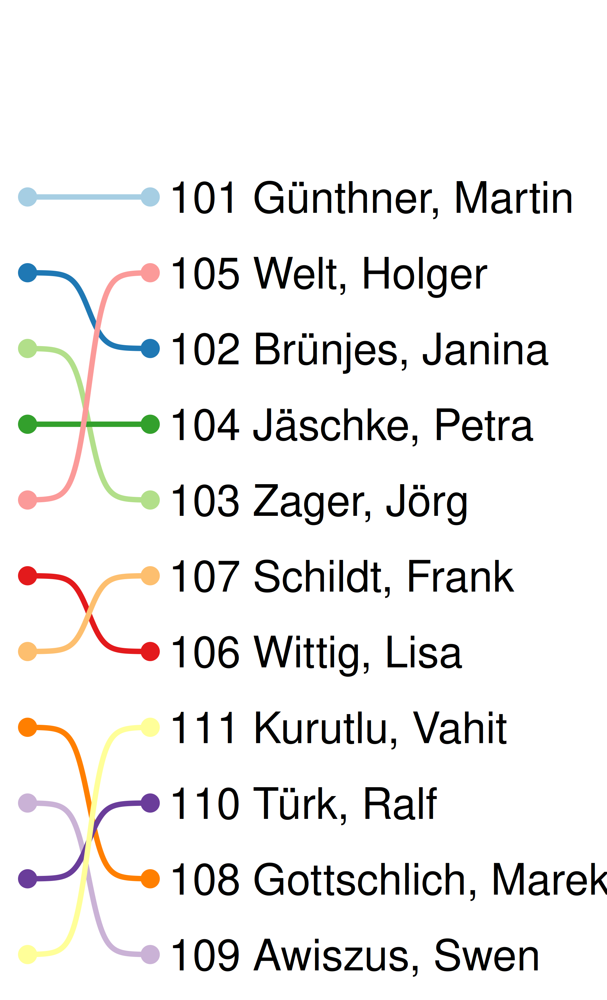
Alternative Personenmandatsvergabe
| Erst Personen-Mandate (gilt zurzeit |
||
| ID | Name | Rang |
|---|---|---|
| 101 | Günthner, Martin | 1 |
| 102 | Brünjes, Janina | 3 |
| 103 | Zager, Jörg | 5 |
| 104 | Jäschke, Petra | 4 |
| 105 | Welt, Holger | 2 |
| 106 | Wittig, Lisa | 7 |
| 107 | Schildt, Frank | 6 |
| 108 | Gottschlich, Marek | 10 |
| 109 | Awiszus, Swen | 11 |
| 110 | Türk, Ralf | 9 |
| 111 | Kurutlu, Vahit | 8 |
| Erst Listen-Mandate (galt bis 2015) |
||
| ID | Name | Rang |
|---|---|---|
| 101 | Günthner, Martin | 1 |
| 102 | Brünjes, Janina | 3 |
| 103 | Zager, Jörg | 5 |
| 104 | Jäschke, Petra | 4 |
| 105 | Welt, Holger | 2 |
| 106 | Wittig, Lisa | 7 |
| 107 | Schildt, Frank | 6 |
| 108 | Gottschlich, Marek | 10 |
| 109 | Awiszus, Swen | 11 |
| 110 | Türk, Ralf | 9 |
| 111 | Kurutlu, Vahit | 8 |
| Nur nach Liste (galt bis 2007) |
||
| ID | Name | Rang |
|---|---|---|
| 101 | Günthner, Martin | 1 |
| 102 | Brünjes, Janina | 3 |
| 103 | Zager, Jörg | 5 |
| 104 | Jäschke, Petra | 4 |
| 105 | Welt, Holger | 2 |
| 106 | Wittig, Lisa | 7 |
| 107 | Schildt, Frank | 6 |
| 108 | Gottschlich, Marek | 10 |
| 109 | Awiszus, Swen | 11 |
| 110 | Türk, Ralf | 9 |
| 111 | Kurutlu, Vahit | 8 |
| Nur Personenstimmen (Volksbegehren 2018) |
||
| ID | Name | Rang |
|---|---|---|
| 101 | Günthner, Martin | 1 |
| 102 | Brünjes, Janina | 3 |
| 103 | Zager, Jörg | 5 |
| 104 | Jäschke, Petra | 4 |
| 105 | Welt, Holger | 2 |
| 106 | Wittig, Lisa | 7 |
| 107 | Schildt, Frank | 6 |
| 108 | Gottschlich, Marek | 10 |
| 109 | Awiszus, Swen | 11 |
| 110 | Türk, Ralf | 9 |
| 111 | Kurutlu, Vahit | 8 |
Fun-Fact (oder auch Sad-Fact): 104 Petra Jäschke wäre sowohl nur nach Personenstimmen wie auch nur nach Listenplatz gewählt. Durch die Kombination von beidem gewinnt sie kein Mandat.
Personenstimmen-Paradox
Personenstimmen können einer Person schaden!
Annahme: Alle Wählerinnen und Wähler von Petra Jäschke (ID 104) bleiben zu Hause.
- Petra Jäschke hätte 0 Stimmen.
- Die SPD hätte 1.392 Stimmen weniger. Der Stimmenanteil würde von 25% auf 24,5% sinken.
Dies würde nichts an der Sitzverteilung an die Parteien ändern. - Das Personen-Mandat-Kontingent hätte 1.392 Stimmen weniger.
| Mit Jäschkes Stimmen | |||
| Stimmen | Prozent | Sitze | |
|---|---|---|---|
| SPD | |||
| Listen | 31.623 | 62.18% | 2 |
| Personen | 19.234 | 37.82% | 2 |
| Ohne Jäschkes Stimmen | |||
| Stimmen | Prozent | Sitze | |
|---|---|---|---|
| SPD | |||
| Listen | 31.623 | 63.93% | 3 |
| Personen | 17.842 | 36.07% | 1 |
| Ohne Jäschkes 1.392 Stimmen | |||
| ID | Name | Stimmen | Rang |
|---|---|---|---|
| 101 | Günthner, Martin | 6669 | 1 |
| 102 | Brünjes, Janina | 1786 | 3 |
| 103 | Zager, Jörg | 1332 | 4 |
| 104 | Jäschke, Petra | 0 | 11 |
| 105 | Welt, Holger | 3173 | 2 |
| 106 | Wittig, Lisa | 1008 | 6 |
| 107 | Schildt, Frank | 1122 | 5 |
| 108 | Gottschlich, Marek | 546 | 9 |
| 109 | Awiszus, Swen | 451 | 10 |
| 110 | Türk, Ralf | 769 | 8 |
| 111 | Kurutlu, Vahit | 986 | 7 |
Das Personen-Stimmen-Paradox ist bisher bei jeder Wahl praktisch aufgetreten. Die Reform 2019 hat daran nichts geändert.
Wie benutzen die Bremer ihre Stimmen?
Die folgenden Analysen benutzen die Datensätze aller Stimmzettel.
Diese bekommt man vom statistischen Landesamt nur mit einem Vertrag zur Nutzung faktisch anonymisierter Mikrodaten.
Wähler-Typen
Wahlbeteiligung schwankt mehr bei Listen-Stimmen.
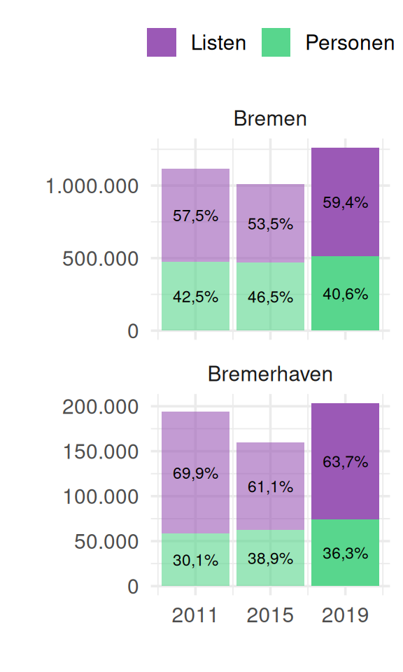
Anzahl der Personenwähler wächst langsam.
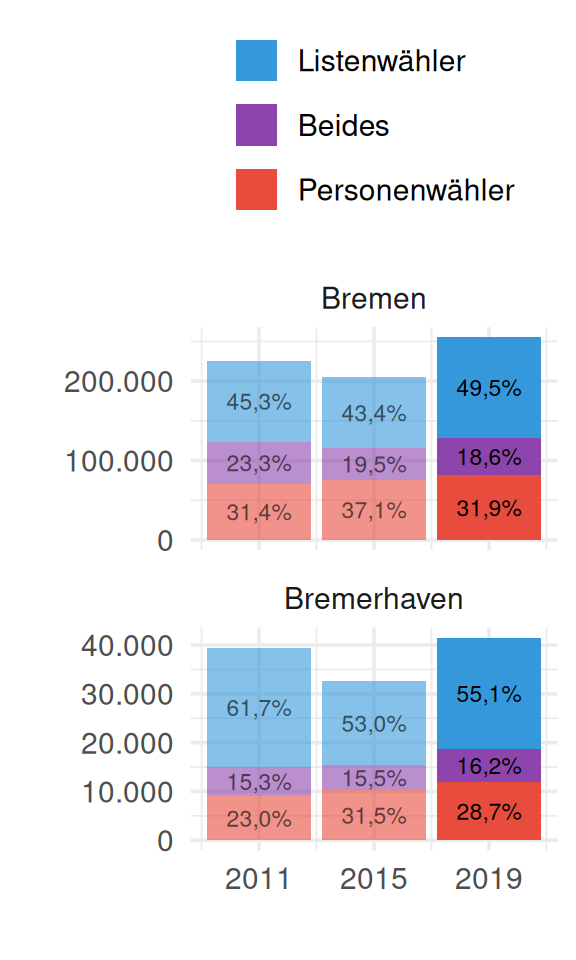
Vollkummulierer: ⦻⦻⦻⦻⦻
Panaschierer verteilen
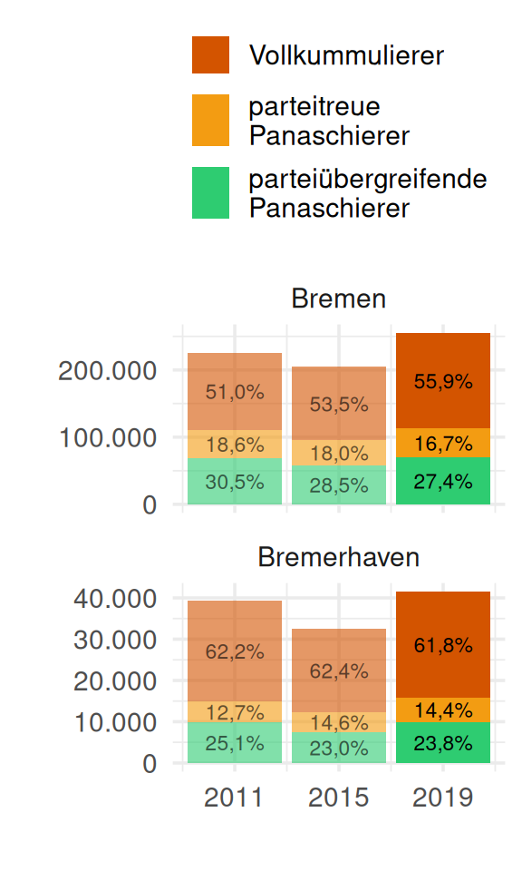
Vollkummulierer/Spitzenkandidaten
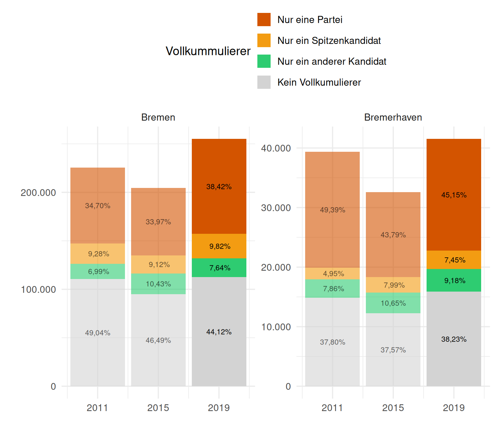
Fragen zum Wählen
Ist es sinnvoll eine Spitzenkandidatin oder einen Spitzenkandidaten zu wählen?
- Sie können nicht bestimmen wer Bürgermeister wird!
- Sie wählen auch ihre oder seine Partei
- Sie wählen auch das Personen-Mandat-Kontingent
- Die Personen-Stimme selbst ist eher unerheblich wegen Listenplatz 1
Voll kumulieren oder panaschieren?
- Wollen Sie Kandidaten auf schlechten Listenplätzen hochwählen, macht es eventuell Sinn sich auf den oder die mit den besten Chancen zu konzentrieren
- Beim letzten Personen-Mandat sind oft wenige Stimmen entscheidend!
Man muss nicht strategisch überlegen
- Stimmen haben auch symbolischen Wert!
- Panaschieren ist eine tolle Möglichkeit den Wählerwillen differenziert auszudrücken.
Profile Kandidaten und Parteien
Kandidaten Profile - Anzahl Wähler
Ein Wähler von Kandidatin XY gibt ihr mindestens 1 oder mehr Stimmen.
| ID | Name | Partei | Stimmen | Wähler | Stimmen pro Wähler |
|---|---|---|---|---|---|
| 101 | Dr. Sieling, Carsten | SPD | 65.550 | 26.340 | 2,49 |
| 201 | Meyer-Heder, Carsten | CDU | 104.219 | 33.076 | 3,15 |
| 301 | Dr. Schaefer, Maike | GRÜNE | 20.750 | 10.860 | 1,91 |
| 401 | Vogt, Kristina | DIE LINKE | 21.285 | 9.743 | 2,18 |
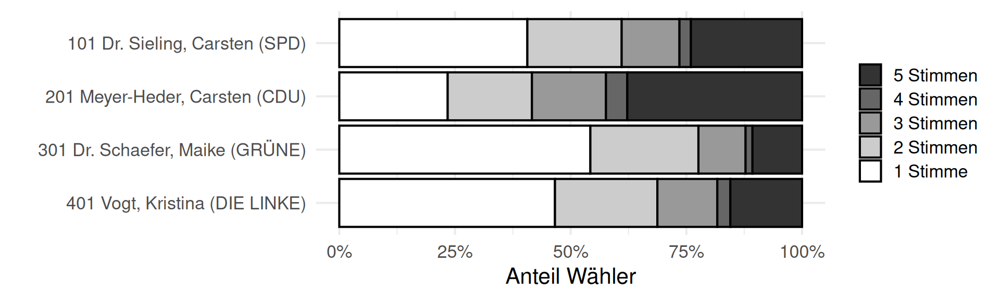
Kandidaten Profile - Extremfälle 2019
| Wahlgebiet | ID | Name | Partei | Stimmen | Wähler | Stimmen pro Wähler |
|---|---|---|---|---|---|---|
| Bremen | 714 | Baum, Viktor | BIW | 1.547 | 398 | 3,89 |
| Bremerhaven | 207 | Özdal, Turhal | CDU | 2.982 | 799 | 3,73 |
| Bremen | 130 | Seyrek, Mehmet Ali | SPD | 3.742 | 1.126 | 3,32 |
| Bremen | 225 | Dr. Yazıcı, Oğuzhan | CDU | 3.169 | 983 | 3,22 |
| Bremen | 201 | Meyer-Heder, Carsten | CDU | 104.219 | 33.076 | 3,15 |
| Bremen | 240 | Fischer, Jens Ulrich | CDU | 190 | 144 | 1,32 |
| Bremen | 106 | Aulepp, Sascha Karolin | SPD | 1.638 | 1.259 | 1,30 |
| Bremen | 310 | Dr. Eschen, Solveig | GRÜNE | 1.095 | 849 | 1,29 |
| Bremen | 104 | Quante-Brandt, Eva | SPD | 2.620 | 2.062 | 1,27 |
| Bremen | 140 | Ittekkot, David | SPD | 198 | 156 | 1,27 |
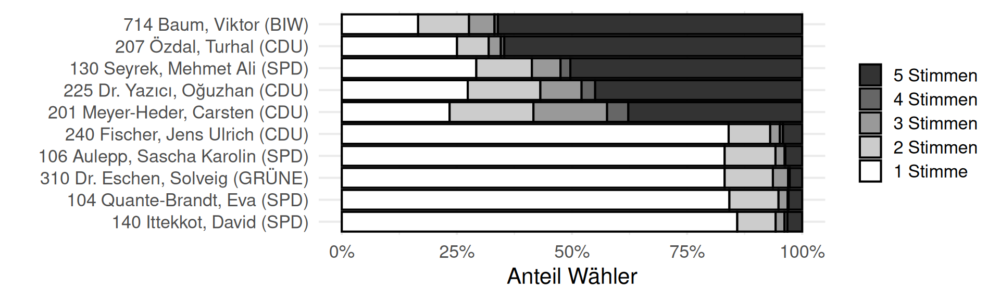
Ähnlichkeit von Parteien durch gemeinsame Wähler
| X | Y | Gemeinsame Wähler | X-Wähler wählen Y | Y-Wähler wählen X |
|---|---|---|---|---|
| SPD | CDU | 9.242 | 11.11% | 11.16% |
| SPD | GRÜNE | 20.364 | 24.48% | 30.37% |
| SPD | DIE LINKE | 10.880 | 13.08% | 24.71% |
| SPD | FDP | 3.596 | 4.32% | 14.56% |
| SPD | AfD | 880 | 1.06% | 5.19% |
| SPD | BIW | 802 | 0.96% | 12.37% |
| X | Y | Gemeinsame Wähler | X-Wähler wählen Y | Y-Wähler wählen X |
|---|---|---|---|---|
| CDU | GRÜNE | 9.314 | 11.24% | 13.89% |
| CDU | DIE LINKE | 2.512 | 3.03% | 5.71% |
| CDU | FDP | 9.901 | 11.95% | 40.10% |
| CDU | AfD | 1.872 | 2.26% | 11.04% |
| CDU | BIW | 1.185 | 1.43% | 18.27% |
| X | Y | Gemeinsame Wähler | X-Wähler wählen Y | Y-Wähler wählen X |
|---|---|---|---|---|
| GRÜNE | DIE LINKE | 15.436 | 23.02% | 35.06% |
| GRÜNE | FDP | 4.226 | 6.30% | 17.11% |
| GRÜNE | AfD | 456 | 0.68% | 2.69% |
| GRÜNE | BIW | 471 | 0.70% | 7.26% |
| X | Y | Gemeinsame Wähler | X-Wähler wählen Y | Y-Wähler wählen X |
|---|---|---|---|---|
| DIE LINKE | FDP | 1.533 | 3.48% | 6.21% |
| DIE LINKE | AfD | 472 | 1.07% | 2.78% |
| DIE LINKE | BIW | 469 | 1.07% | 7.23% |
| X | Y | Gemeinsame Wähler | X-Wähler wählen Y | Y-Wähler wählen X |
|---|---|---|---|---|
| AfD | FDP | 884 | 5.21% | 3.58% |
| AfD | BIW | 1.384 | 8.16% | 21.34% |
Die Politische Landschaft Bremens aus den Wahldaten extrahiert
Die politische Landschaft 2019
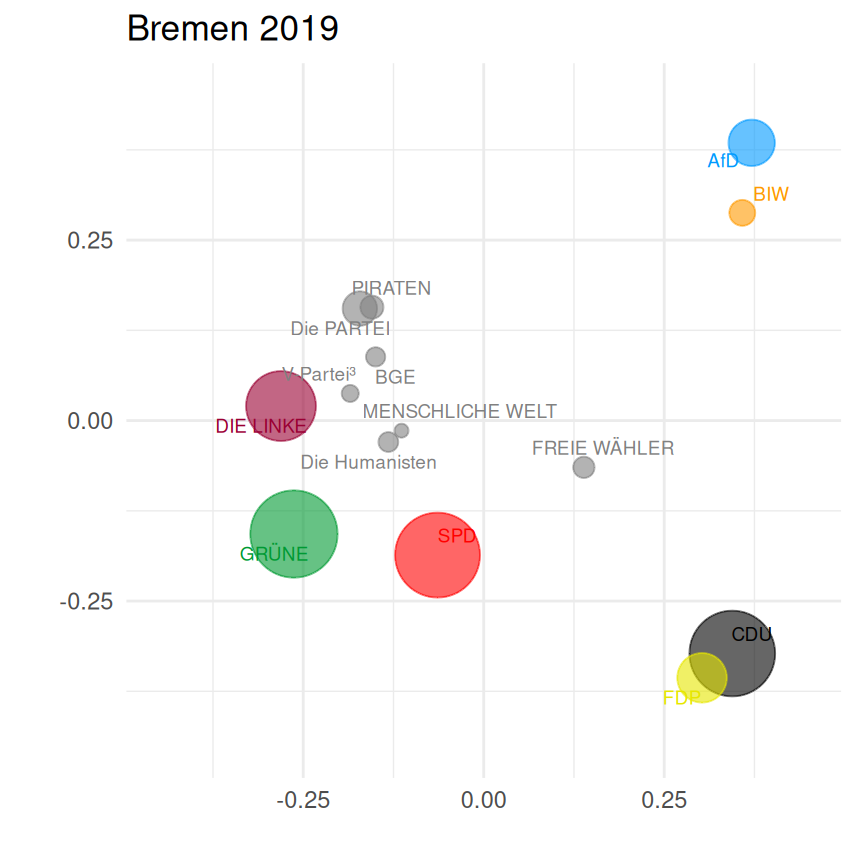
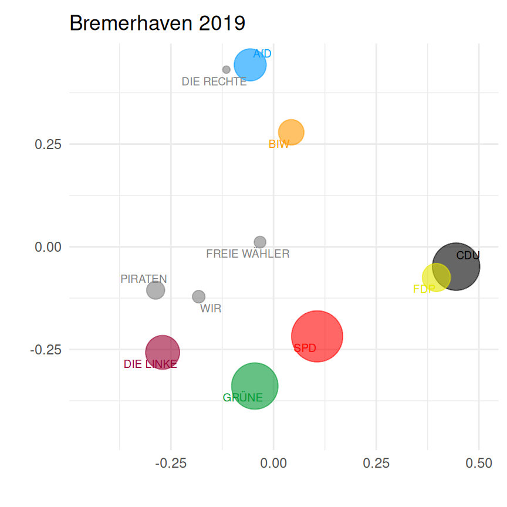
Die politische Landschaft 2015
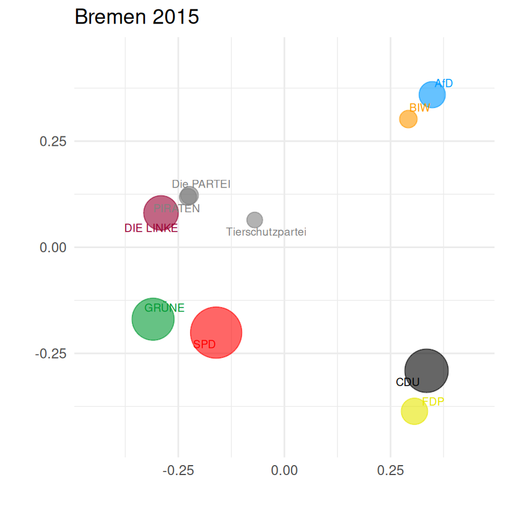
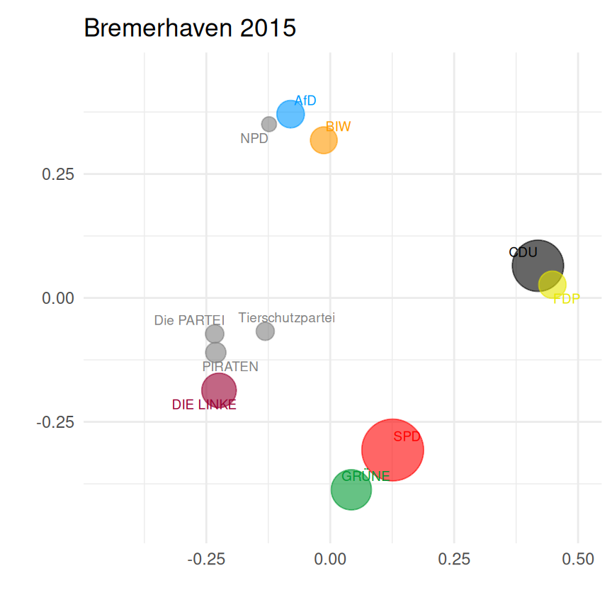
Die politische Landschaft 2011
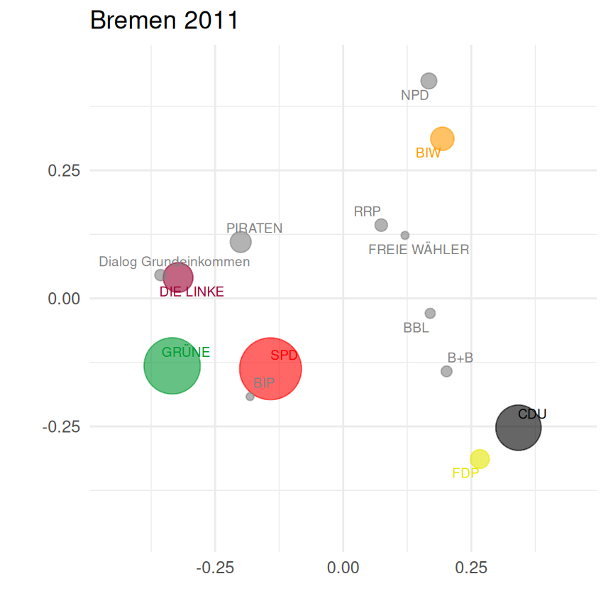
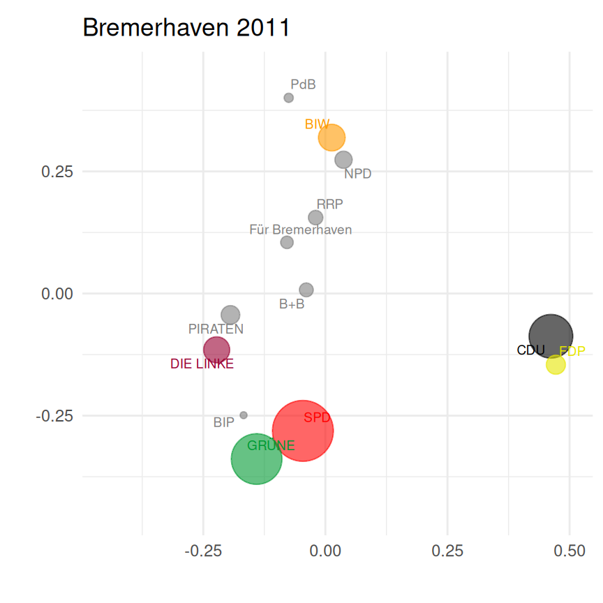
Politische Landschaft Bremen 2019 Parteien
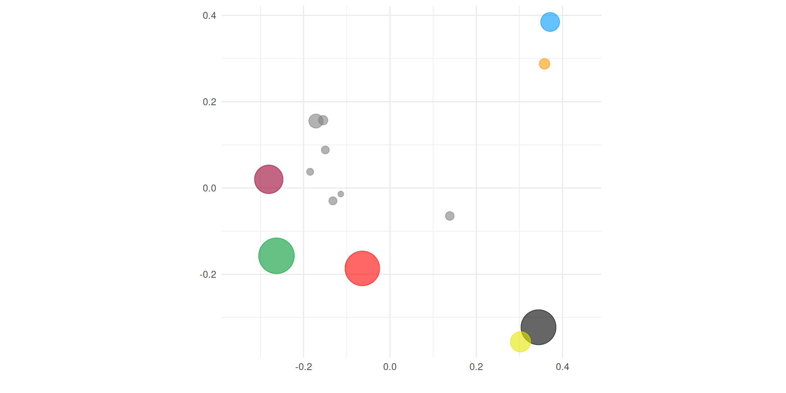
Parteienlandschaft mit Wählern
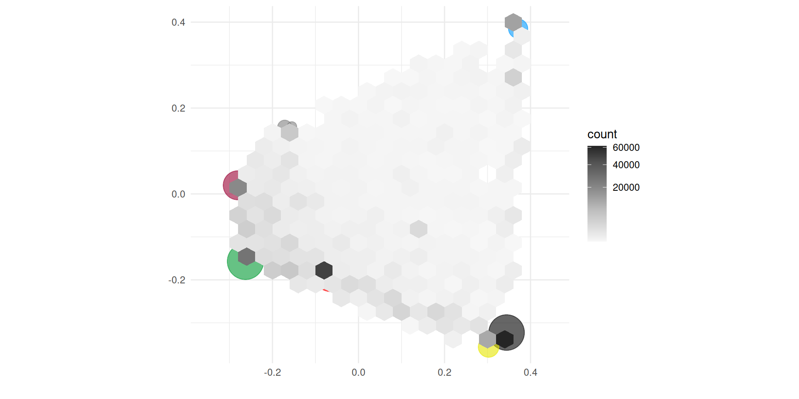
Wählerlandschaft mit Kandidaten
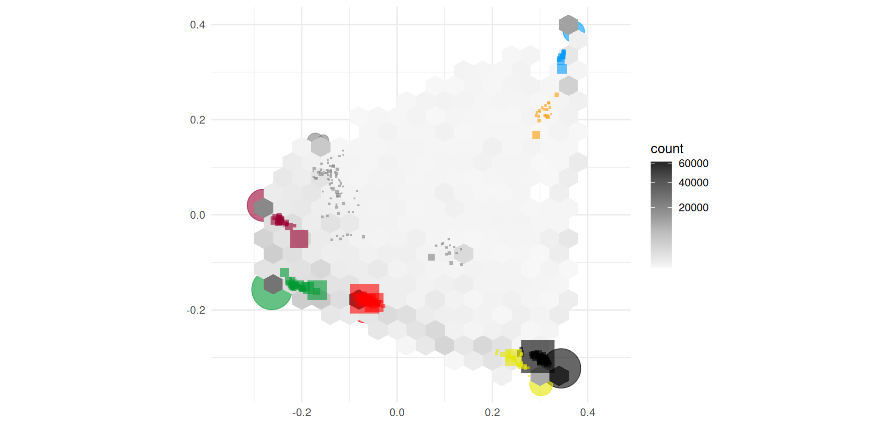
Runde 2: Wähler und Kandidaten Update
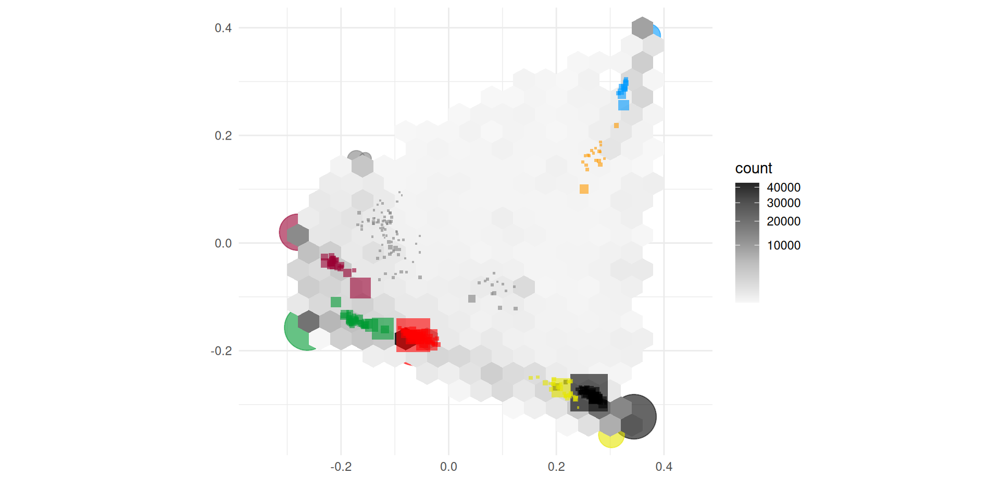
Runde 3: Wähler und Kandidaten Update
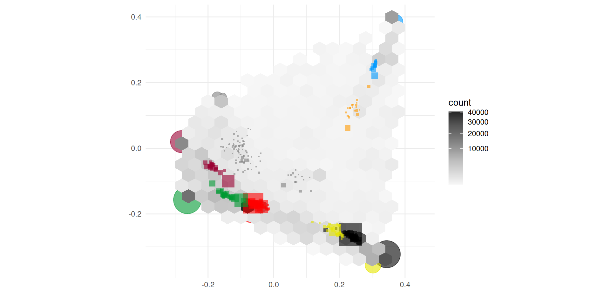
Runde 4 und 5: Wähler und Kandidaten Update
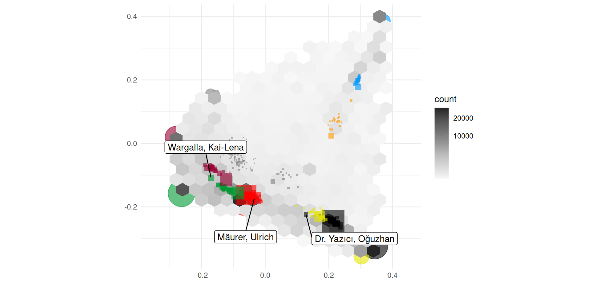
Was wäre noch möglich
- Gibt es Unterschiede der Kandidaten-Typen in bezug auf:
- Stadtteil
- Geschlecht
- Alter
- Beruf
- Ist der politische Raum ähnlich, wenn er mit den Daten des Wahl-o-mat oder mit Parteiprogramm-Texten generiert wird?
- …
Schicken Sie mir gerne Ihre Fragen an die Daten und die politische Landschaft Bremens!
✉️ post@janlo.de
Wieviele Personenmandate wird es in Bremen geben?
Annahmen für die Schätzung
Letzte Umfrage von Infratest dimap1. Personenstimmen-Anteile von 2019 übernommen. Muss nicht so kommen!
Wie finde ich Kandidierende?
- https://www.kandidierendencheck.de/ von abgeordnetenwatch.de
- Wahl-o-mat für Personen
- Nur 10 Fragen
- Parteien Webseiten mit den Kandidierenden
| Prozent | Sitze | |
|---|---|---|
| CDU - 27% - 20 Sitze | ||
| Personen | 50.9 | 10 |
| Liste | 49.1 | 10 |
| SPD - 30% - 23 Sitze | ||
| Personen | 48.8 | 11 |
| Liste | 51.2 | 12 |
| GRÜNE - 13% - 10 Sitze | ||
| Personen | 29.2 | 3 |
| Liste | 70.8 | 7 |
| FDP - 6% - 5 Sitze | ||
| Personen | 40.4 | 2 |
| Liste | 59.6 | 3 |
| LINKE - 10% - 7 Sitze | ||
| Personen | 32.3 | 2 |
| Liste | 67.7 | 5 |
| BIW - 9% - 7 Sitze | ||
| Personen | 25.4 | 2 |
| Liste | 74.6 | 5 |

Jan Lorenz | http://janlo.de | Assistant Professor in Social Data Science | Mastodon @janlo@datasci.social | Twitter: @jalorenz